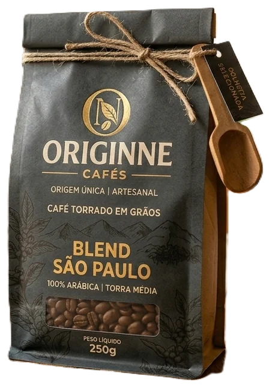
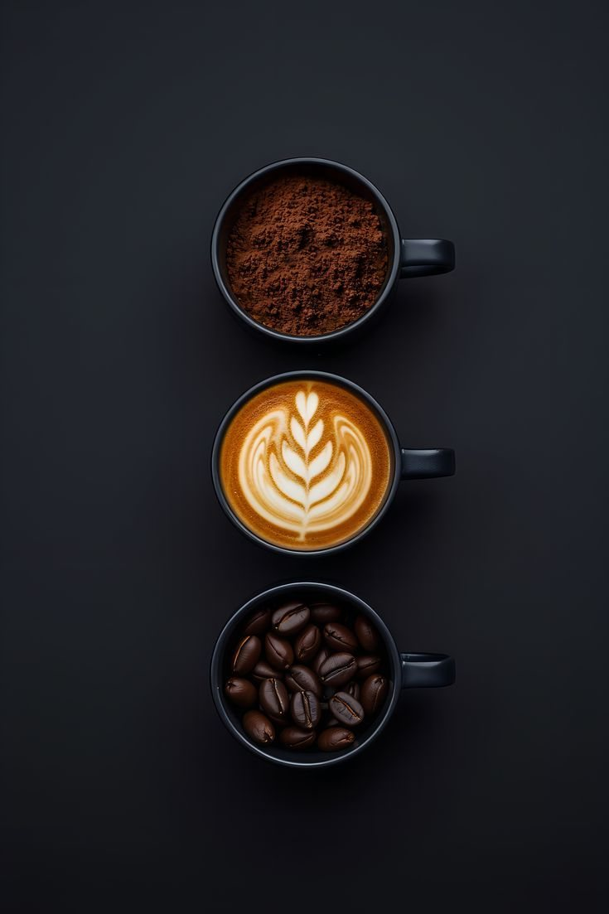
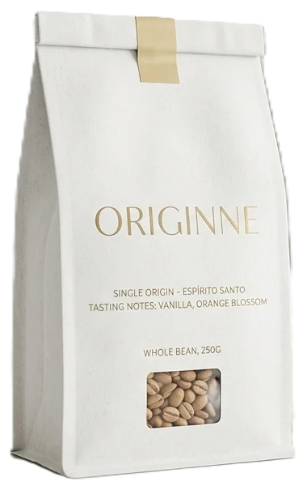
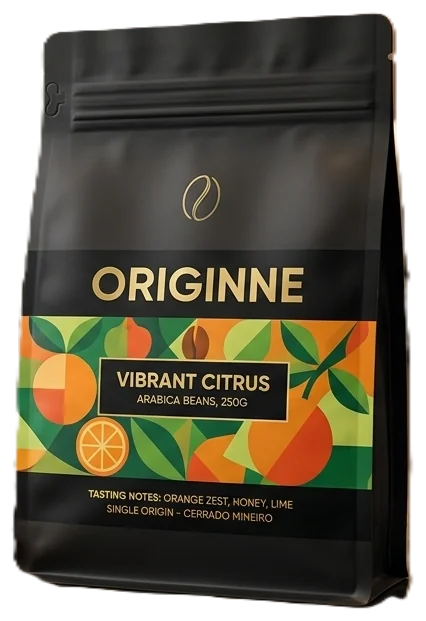

Blend São Paulo
100% Arábica · Torra média
Café torrado em grãos, origem única e artesanal.
Sua jornada pelo café especial começa aqui. Combinamos grãos selecionados das melhores fazendas com um processo artesanal de torra para entregar frescor e intensidade em cada xícara. Descubra o que torna a Originne única.
Descubra a Origem
Cafés das melhores fazendas, escolhidos grão a grão.
Precisão no ponto da torra para realçar frescor e intensidade.
Do aroma ao último gole, um ritual diário que desperta os sentidos.
Na Originne, acreditamos que o café não é apenas uma bebida, mas o ponto de encontro entre a terra e o paladar. Nascemos da paixão pela busca do grão perfeito, respeitando o tempo da natureza e a dedicação de quem planta. Cada xícara conta uma história: desde a altitude das montanhas até a precisão da nossa torra artesanal. Nossa missão é despertar seus sentidos e transformar seu ritual diário em uma experiência sensorial única.
Três jeitos de começar o dia, todos em embalagens de 250 g.

100% Arábica · Torra média
Café torrado em grãos, origem única e artesanal.

Em grãos · Notas de baunilha e flor de laranjeira
Delicado, aromático e perfeito para métodos filtrados.

Arábica · Cerrado Mineiro
Notas de laranja, mel e limão em um café vibrante.
Um lugar pensado para o seu ritual: luz quente, cheiro de café fresco e cada bebida preparada com cuidado, do espresso ao café gelado.